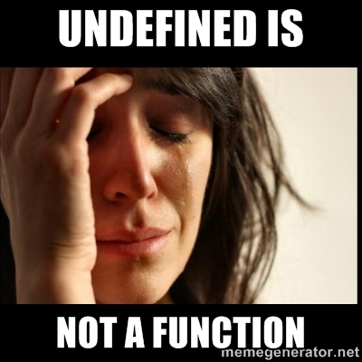
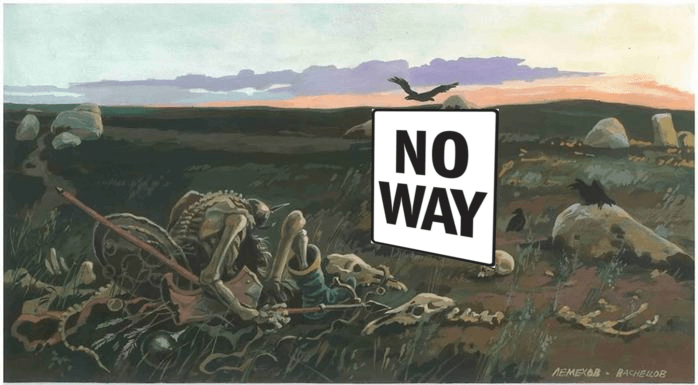

class: center, middle # From side-effects to manageable effects --- # Some frontend code ```javascript var URL = 'https://api.giphy.com/v1/gifs/random?api_key=dc6zaTOxFJmzC&tag=cats'; function app() { document.querySelector('button').addEventListener( 'click', () => fetch(URL) .then(response => response.json().data.image_url) .then(gifSrc => document.querySelector('img').setAttribute('src', gifSrc)) ); } ``` ### Effects: - DOM: `document`, `setAttribute` - HTTP: `fetch` --- # Key properties of side-effects + Not first-class citizen - Can not be passed as an argument - Can not be returned from a function - Can not be assigned to a variable + Depends on the "outside world" + Infects "side-effects free" code ## What this means for practice? - Сomplexity for analysis(for human and tools) - Сomplexity for refactoring - Сomplexity for reusing - Hard testing - Unpredictability and irreproducible - Inability to typify(Flow, TypeScript etc.) - Impossibility of an interactive development(REPL) - Complexity in providing certain properties of program --- # Сomplexity for analysis .left-column-50[ ```javascript function calcAnything(value) { var a = calcA(value); var b = calcB(value); return сalcC(value, b); } ``` vs ```javascript function doSomething() { var a = doSomethingA(value); var b = doSomethingB(value); return doSomethingC(value, b); } ``` ] .right-column-50[  .question[ ? ] ] --- # Сomplexity for refactoring .left-column-50[ ```javascript function calcAnything(value) { var a = calcA(value); var b = calcB(value); return сalcC(value, b); } ``` vs ```javascript function doSomething() { var a = doSomethingA(value); var b = doSomethingB(value); return doSomethingC(value, b); } ``` ] .right-column-50[ ```javascript function calcAnything(value) { return сalcC(value, calcB(value)); } ``` .question-with-padding[ ? ] ] --- # Is dead code? <img alt="Pink panter" src="./img/complicate-refactoring.gif" width="80%" /> --- # Сomplication reuse .left-column[ ```javascript function calcLengthAndSum() { ... } function calcLength(list) { return calcLengthAndSum(list).length; } function calcMean(list) { var res = calcLengthAndSum(list); return res.sum / res.length; } ``` vs ```javascript function sendRequestAndWriteFile() { ... } function sendRequest() { return sendRequestAndWriteFile({ onlyRequest: true }); } function sendRequestAndWriteFileOnUrl(url) { return sendRequestAndWriteFile({ url: url }) } ``` ] .right-column[  .bottom[  ] ] --- # 1000 and 1 flags ```javascript doSomething({ sendMetrics: true, urlSomeAction: '/action', logToFile: './log', progressBar: false, afterAction: () => ..., beforeAction: () => ... }) ``` --- # Hard testing ```javascript it('2 + 2 = 4', () => { var result = add(2, 2); expect(result).toBe(4); }) ``` vs ```javascript it('remoteAdd send args to endpoint', () => { var postCalls = []; var fakeRes = {}; mock(HttpClient, { post: (...args) => { postCalls.push(args); return fakeRes; }) var result = remoteAdd(2, 2); expect(postCalls.length).toBe(1); expect(postCalls[0]).toEqual({url: URL, params: {a: 2, b: 2}}); expect(result).toBe(fakeRes); }); ``` --- # Broken testing ```diff function add(a, b) { - return a + b; + return {result: a + b}; } ``` Test failed: expected `4`, received `{result: 4}` VS ```diff function remoteAdd(a, b) { + document.dispatchEvent(new LogEvent([a, b])); return HttpClient.post(a, b); } ``` Test pass --- # Some doubts  --- # Solution: explicit dependencies ```diff -function remoteAdd(a, b) { +function remoteAdd(document, HttpClient, a, b) { document.dispatchEvent(new LogEvent([a, b])); return HttpClient.post(a, b); } ``` <img src="./img/ng-di.jpg" width="90%" /> --- # DI is the opium of the developers ```javascript function app(FileClient, HttpClient, a, b) { FileClient.write('log', [a, b]) HttpClient.post(a, b); var lastLine = FileClient.readLastLine(); var resHttp = Http.get(); return resHttp + lastLine; } ``` Implement the world: ```javascript FileClient = ... // implement some fake FileSystem HttpClient = ... // implement some fake HttpServer ``` .left-column-50[ Bad: ```javascript var result = app(input) expect(result).toEqual(output) ``` ] .right-column-50[ Good: ```javascript var inputWorld = new World() var { result, world } = app(input, inputWorld) expect(res.result).toEqual(output) expect(world.isEqual(outputWorld)) ``` ] --- # Unpredictability and irreproducible > _Everything changes and nothing stands still_ > > -- <cite>Heraclitus</cite> ```javascript add(2, 2); ``` vs ```javascript try { remoteAdd(2, 2); } catch(e) { handleError(e); } ``` ```javascript calc(a, b) === calc(a, b) ``` vs ```javascript var res1 = fetchSomething(a); // data on server changed var res2 = fetchSomething(a); res1 !== res2 ``` --- # Inability to typify .center-text[  ] --- # Inability to typify ```javascript function parse(str: string): number | null { return isLikeNumber(str) ? parseInt(str) : null; } function add(a: number, b: number) { return a + b; } add(parse('aaa'), 3) // compile-time error ``` But typing is not useful for side-effectful code: ```javascript function patchDOM(patch: DOMPatch): void { ... } function serverProgram() { ... patchDOM(patch); // run-time error } ``` --- # Solution? [Possible solution in Flow](https://medium.com/@gcanti/the-eff-monad-implemented-in-flow-40803670c3eb) ```javascript type DB = { type: 'DB' }; type User = { username: string, uid: number }; function createUser(username: string): Eff<{ write: DB }, User> { ... } function lookupUser(username: string): Eff<{ read: DB }, ?User> { ... } ``` --- # Impossibility of an interactive development Tools: - REPL(terminal, editor plugin, console) - Mancy - Light Table  Articles: - http://tonsky.me/blog/interactive-development/ --- # Problems ```javascript > deleteUser(12) {result: "OK"} > deleteUser(12) {error: "User not found"} > addUser(12, data) > deleteUser(12) {result: "OK"} ``` Possible solutions: - jest-repl - mocha debug repl --- # Complexity in providing certain properties of program Side-effects free functions has properties(like as math functions) ```javascript var sortIdempotent = jsc.forall("string -> nat", "array string", function (f, arr) { return _.isEqual(_.sortBy(_.sortBy(arr, f), f), _.sortBy(arr, f)); }); jsc.assert(sortIdempotent); ``` Tools: - testcheck - js-verify --- # Two kinds of programming <img src="./img/vityaz.png" width="100%" /> --- # Top-Down 1) Vision and design ```typescript printSum(list: Array): PrintedSumToScreenEffect ``` 2) Develop ```typescript sum(list: Array): number printToScreen(value: number): PrintedSumToScreenEffect ``` Tools: - tests - provable, but not common - diargams(UML etc.) - common, but not provable - static types - common and provable > Люди рисуют UML-диаграммы, чтобы понять общую схему программы. Именно этим занимаются программисты на функциональных языках и на Haskell, когда придумывают сигнатуры типов для модулей и функций в этих модулях. > > -- <cite>[Саймон Пейтон Джонс](http://fprog.ru/2010/issue6/interview-simon-peyton-jones/)</cite> --- # Bottom-Up 1) Reuse and modularize ```javascript sum(1, 2, 3, 4) // -> 10 print('Hello', screen) // -> prints 'Hello' to screen ``` 2) Solve ```javascript function printSum(list) print(sum(...list), screen) } ``` Tools: - tests - fragile and slow(not interactive) - REPL - fast and agile --- # Two way... .left-column-50[ ###Top-Down  - Define top level API(without the implementation) - Define underlying API More consistent and correct, but less fast and agile Main tool: strong static types ] .right-column-50[ ###Bottom-Up  - Implement low level API calls as isolated components - Compose them to secondary level API components More agile, fast, but less consistent Main tool: REPL ] --- # Or no way?  --- # Infects side-effects free code .left-column[ ```javascript function calcForItem(...) { ... var cachedResult = localStorage .getItem(argsHash); if (cachedResult) { return cachedResult; } else { ... localStorage.setItem(argsHash, res) return res; } } ``` ] .right-column[  ] --- # Two-color language > _In Soviet Russia side-effects control you!_ Links: - [Article Bob Nystrom](http://journal.stuffwithstuff.com/2015/02/01/what-color-is-your-function/) - [Talk Andrey Salomatin](https://www.youtube.com/watch?v=OGSppLmGchY) ```javascript blue•function doSomethingAzure() { // This is a blue function... } red•function doSomethingCarnelian() { // This is a red function... } blue•function doSomethingAzure() { doSomethingCarnelian()•red; // Error - you cant call red inside blue } ``` Two different kinds of program code: - execution or outside calcultation(side-effects) - red functions - calculation(pure) - blue functions --- # Ice-9 for source code .center-text[ <img alt="Cats cradle" src="./img/cats-cradle.jpg" width="50%"/> ] > \- Ты читал "Колыбель для кошки"? > > \- Нет > > \- Итак, этом романе мир погибает потому, что во льду обнаружена молекула, которая, при соприкосновении с водой, превращает ее в лед. А поскольку все воды мира связаны - пруд с ручьем, ручей с рекой, река с озером, озеро с океаном - таким образом весь мир замерзает и погибает. И эта молекула называется - "Лед-9" > --- # Sync vs Async .left-column-50[ Sync: ```javascript var res1 = doSmth1(start); var res2 = doSmth2(res1); var res3 = doSmth3(res2); ``` ] .right-column-50[ Async: ```javascript doSmth1(res1 => { doSmth2(res1, res2 => { doSmth3(res2); }); }); ``` <img src="./img/cf-diagram-async.svg" /> ] --- # Pure vs Effectful .left-column-50[ Pure: ```javascript var res1 = doSmth1(start); var res2 = doSmth2(res1); var res3 = doSmth3(res2); ``` ] .right-column-50[ With effects: ```javascript var eff1 = doSmth1(start); var res1 = runEffect(eff1); var eff2 = doSmth2(res1); var res2 = runEffect(eff2); var eff3 = doSmth3(res2); var res3 = runEffect(eff3); ``` ] --- # Safe vs Error handling .left-column-50[ Without error: ```javascript var res1 = doSmth1(start); var res2 = doSmth2(res1); var res3 = doSmth3(res2); ``` ] .right-column-50[ With error handling: ```javascript var res1 = doSmth1(start); if (isError(res1)) { var res2 = doSmth2(res1); if (isError(res2)) { var res3 = doSmth2(res2); } else { handle(res2) } } else { handle(res3) } ``` <img src="./img/cf-diagram-error.svg" /> ] --- # Not nullable vs nullable .left-column-50[ Not nullable: ```javascript var res1 = doSmth1(start); var res2 = doSmth2(res1); var res3 = doSmth3(res2); ``` ] .right-column-50[ With null-check: ```javascript var res1 = doSmth1(start); if (!isNull(res1)) { var res2 = doSmth2(res1); if (!isNull(res2)) { var res3 = doSmth2(res2); } } ``` <img src="./img/cf-diagram-null.svg" /> ] --- # GOTO .center-text[ <img src="./img/goto.jpg" width="65%"/> ] --- # Example: error handling .left-column-50[ Today: ```javascript var res1 = doSmth1(start); if (isError(res1)) { var res2 = doSmth2(res1); if (isError(res2)) { var res3 = doSmth2(res2); } else { handle(res2) } } else { handle(res3) } ``` ] .right-column-50[ With GOTO: ```javascript error: handle(errorMsg) global errorMsg; function exitIfErr(res) { if (isError(res) { errorMsg = res; goto error; } else { return res; } } // calculation var res1 = exitIfErr(doSmth1(start)); var res2 = exitIfErr(doSmth2(res1)); var res3 = exitIfErr(doSmth3(res1)); ``` ] --- # Don't forget where you came from Mother of all statement: .center-text[ `if value then goto label` ] .left-column-50[ ```c i = 1; while(i < 4) { print(i); i = i + 1; } ``` ] .right-column-50[ ```c i = 1 START: if i = 4 then goto END print(i) i = i + 1 goto START ``` ] .center-text[ ] --- # All is need you is... .left-column-50[ Calculation: `c = add(inc(a), dec(b))` Order execution: 1) `inc(a)`, `dec(b)` 2) `add(inc(a), dec(b))` <img src="./img/strict.svg" /> ] .right-column-50[ Conditional jump: `if add(a, b) then goto LABEL` Order execution: 1) `add(a, b)` 2) `if (add(a, b))` 3) `goto label` <img src="./img/if-order.svg" /> ] --- # New World Order Imagine some calculation with reverse order calculation .center-text[ `c = add(inc(a), dec(b))` ] 1. `add(placeholder1, placeholder2)` 2. `inc(a)` 3. `dec(b)` .center-text[ <img src="./img/lazy.svg" /> ] --- # In your code .left-column-50[ ```javascript var x = {} x && x.obj && x.obj.prop ``` ] .right-column-50[ ```javascript var x = {} and(and(x, x.obj), x.obj.prop) ``` <img src="./img/strict-example.svg" /> ] --- Лень - дерево вычислений --- Control-flow как HOC --- First-class control flow